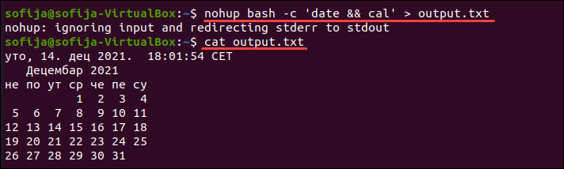
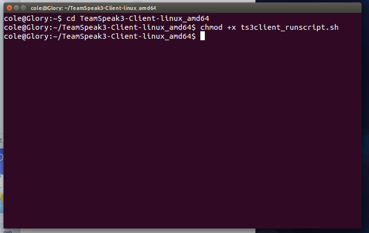

Introdução
Recentemente me foi passado uma serie de exercícios, para aumentar minha afinidade com o bash do linux. Nesses exercicios, tive que ter noções basicas de grep, ls, cd além de rodar executaveis .sh, para comandos como blastp, blastn. Afim de fazer alinhamentos e comparações de proximidade entre a sequencia observada com o banco de dados.
Exercícios
Durante esse processo, me recomendaram alguns comandos, para que aumentar a velocidade de analíse entre eles, tive que aprender:
-nohup:
Faz com que o executavel seja rodado pela rede local, caso tenha algum problema com a máquina o executavel ainda vai ser rodado e entregará resultados.

.sh:
Esse sh faz com que seja possível, outras pessoas executarem seu codigo, geralmente aqui no LBI (Laboratório de Bioinformática) as pessoas usam o RunMe. Facilitando a reprodução do seu código, o .sh no final demonstra que é um codígo de bash. A presença desse arquivo nos diretorios torna possivel, a reanalise dos dados.

awk
Awk foi o comando mais utilitario que eu conheci hoje ele funciona para listar dados, podendo ser representado pela preferencia do usuario, posso olhar só os querys com mais de 80% de semelhança advindos do resultado do meu blast. No awk você pode analisar cada coluna separadamente além de poder ordenar da maneira que você quiser. Além de remover duplicatas e poder contar os resultados.

grep
grep eu já conhecia, mas aprendi algumas funcionalidades novas, grep basicamente é um finder eu procuro no meu arquivo, podendo remover algo da lista, por exemplo tem uma proteína X que eu to interessado posso mapear aonde ela aparece na sequencia, e se eu usar grep -v posso retirar coisas dessa lista também.
Conclusão
Então gente, esses comandos foram os que eu mais utilizei até o momento, sinto que tenho muita coisa pra aprender em noções de terminal. Mas to animado, sinto que já me familiarizei bastante nos meus 1 ano de uso do sistema operacional. E quando converso com pessoas que utilizam a muitos anos, vejo que é sempre possivel facilitar os processos tornando eles mais rapidos, tudo é uma questão de prática. Ao longo do meu projeto vou atualizando coisas que vou aprendendo e como a bioinformática ajuda nesses processos.
Obrigado gente!